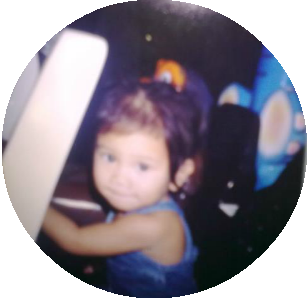
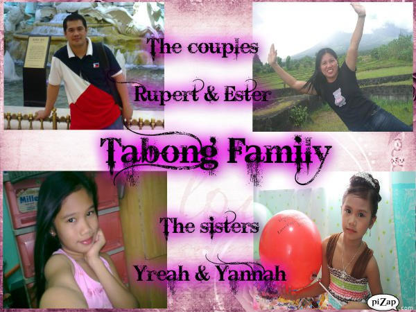
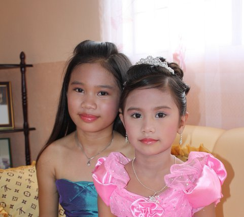
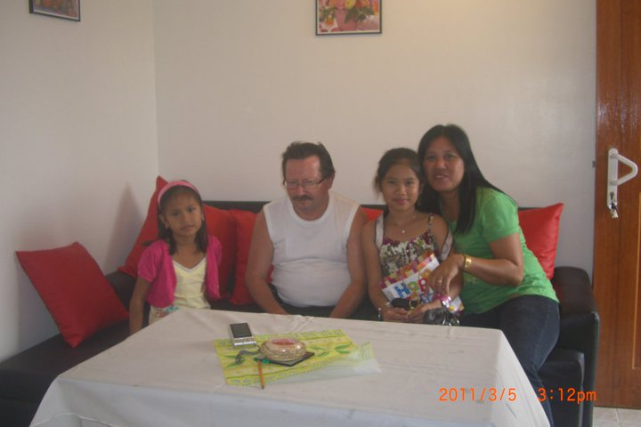

 
Hello everyone! I am Yreah Nicole del Rosario Tabong, I was born on April 1 1999
in Quezon City . We started living here in cavite year 2000. When I was a child, my mother
told me that I am a very obedient child, and also achiever in school. I remember when I was a
kindergarten, my teacher gave me an award, and it is "most talkative", because my teacher said
I always talk and talk with my classmate.
|
|
   This is my family. My father's name is Ruperto Tabong Jr. He is working abroad for 12 years.
My mother's name is Ester Tabong. She is our father and mother in the house for the mean time. and lastly my sister.
Her name is Yannah Luisa Tabong. I don't like her, here's the reason why.
In the family, I am the oldest child. I have one sibling, a girl to be specific. I do not like her to be my sister because I do not,
want her attitude. She is always making me mad. She does not following my command. I envy her because my parents attention are all to her.
They did not even notice my efforts. My parents always notice what my sister do. They are over protective also. When I was a kid, my parents
are working. I am always with my nanny, and then my mother got pregnant. And they told me that I am going to have a baby sister. When my
mother gave birth to my sister, I was happy. I like to be with her side. But then things had changed when we are growing up. I feel like my parents
does not love me. They are always in favor with my sister, eventhough she is the one who made a mistake. I do not like her very much. When in terms of
school, I always got a high grades, I am an achiever when I was in elementary and highschool. I do not get a line of 7, then my parents will just
simply tell to me that I should make it higher next time. But when it comes to my sister, they think that she is perfect. Eventhough she got line of 7
they did not even bother to scold her. I remember when I was in elementary, I had a 13 mistakes in our math exam and then my mother got mad at me. She even
scolded me and hit me with her hands. It was really unfair. My parents always see my mistakes but when it comes to my sister, she is always perfect.
Sometimes, I just want to be alone. I do not want to be with them. I do not want to have a sister. I do not like her so much. There was a time when my sister
was bullied, I got mad to those children who make fun of her. Eventhough I do not like her, I will always protect her if she needs me, I envy her, but this is not
a reason to leave her. I will always be here for her. First born child are the one who has there parents attention when there sibling/s are not born. But when it was
born already and their parents did not explain to them well on how to become a sister or or a brother, they will feel dethrowned or being neglected by their parents.
First born child is also protective and suportive. (PS. those pictures were edited, when I was young)
|